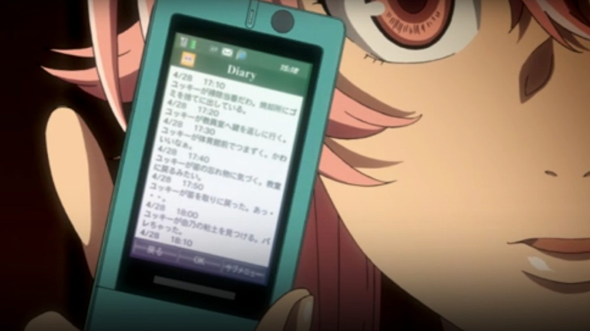
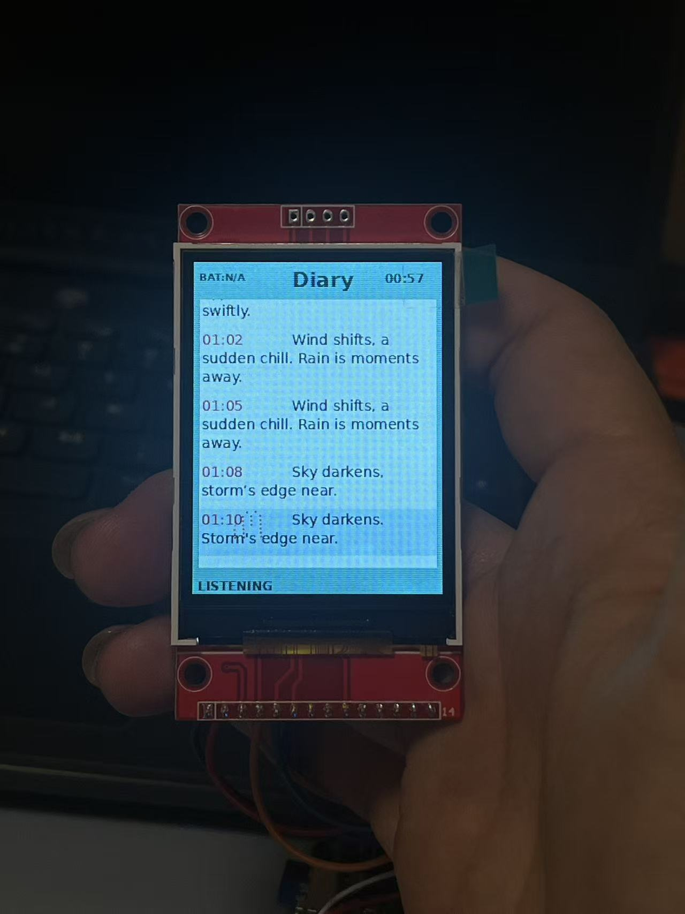
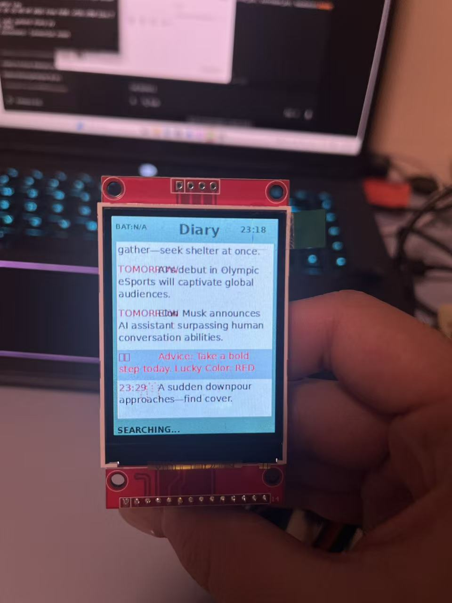
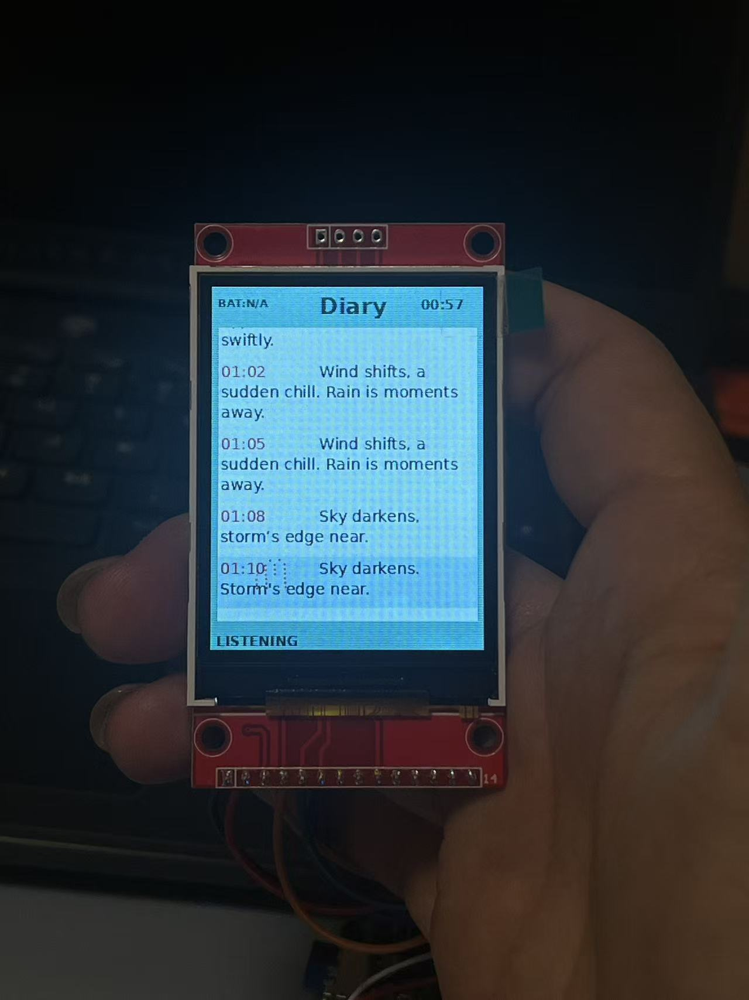
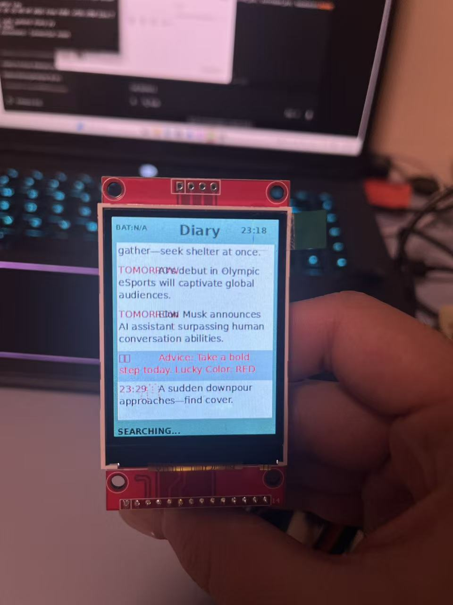
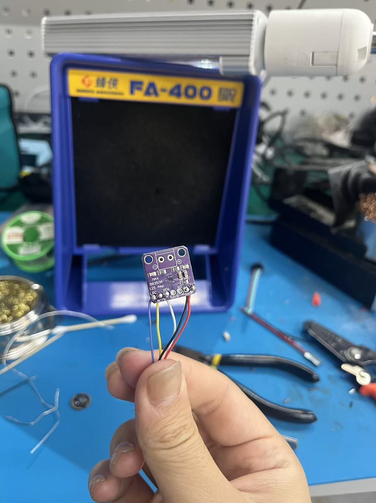

Future Diary Phone (Prototype) — Shengtao
Overview
This is a prototype built during a residency in Shenzhen. It started from Huaqiangbei (repair/resale culture + old phone designs) and the anime Mirai Nikki (Future Diary). The first idea was “future prediction,” but the project later shifted toward a keypad-based fortune/diary device with a rewriting trigger.
Huaqiangbei
I visited Huaqiangbei and saw many phone repair and phone resale stores. The Huaqiangbei Museum collects phones from around the 2000s (flip phones, feature phones, early mobile products). These phones are not used anymore, but their form factor and button-driven interaction are still impressive.

Reference: Mirai Nikki (Future Diary)
In the story, the protagonist receives a phone that gets messages about future events. The messages arrive irregularly.
Video: Open 1.mp4
Prototype V0: GPS + time → “future diary” messages
- Input: GPS location + current time
- Send to an LLM API
- Output: future diary messages shown on the screen
The “future” was not accurate and often felt like random generation, so I reframed it as a fortune/oracle device instead of a prediction tool.
 



Interaction: keypad functions
I added a keypad and mapped keys to functions:
- 1: today’s luck + lucky color — fortune.mp4
- 3: warning — warning.mp4
- 4: summarize previous diary entries
- 6: tomorrow’s possible events — tomorrow.mp4
Rewriting
If travel distance changes a lot, the diary result updates (the “future” is rewritten). This is rule-based for now.
Video: 2.mp4 · Rewrite.mp4
Voice interaction (attempt)
I tried voice interaction but it was not reliable in this iteration. I plan to solve it later.
System components + wiring diagram:

Next step
- Physical form factor (retro-future look)
- Better inputs for “future diary” without turning it into surveillance
More inputs might include occupation, personality traits, and other personal context.